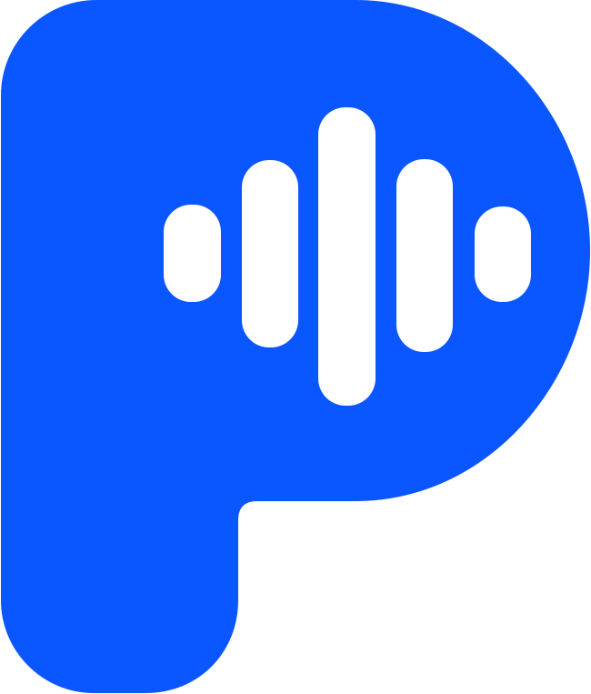

Logo and app icon
Ribbon Pulse, from brand/kit/logo. Geometry untouched; the palette is chosen per theme.
Mark, light palette. Body #0585fc to #0029b0, highlight #46c9fc, fold #04185a.
Mark, dark palette. The SVG's own dark stops (#5cb4ff to #5470ee, fold #3a58cc) so the fold doesn't sink into the canvas.

Monochrome blue (#0b57ff, 5.50:1 on white) and white on royal (5.50:1). Use these below 24 pt and in the tray.
Monochrome, dark palette #6ea8ff (7.76:1 on the dark canvas).
Where the logo appears in the app
Plaudon
nav rail header, 24 pt mark
first-run setup, About
Collapsed rail (below 1040 pt) shows the mark alone at 20 pt. Clear space is a quarter of the mark's height. Minimum 16 px for the mark, 96 px wide for the lockup, as the kit says.
App icon
16
ships today
PROPOSEDapps/plaudon-egui/packaging/icon.svg is still the earlier five-bar tile in #1a4fa0. I'd swap the bundle, .icns, .ico and the eframe window icon to the kit's desktop exports so the dock matches the rail.
Brand colours in the UI
Highlight #46c9fc✕ 1.91:1 on white
Sky #56c9ff✕ 1.88:1
Teal #17c7c7✕ 2.09:1
Azure #2f86ff! 3.51:1, UI only
Royal #0b57ff✓ 5.50:1
Ink #172544✓ 15.17:1
The cyan family lives inside the mark only. It never carries text, a status, a focus ring or a waveform. Royal becomes the focus ring; the accent is a slightly deeper #0a4fe0 so white text on it clears 6.5:1.
egui mapping. egui can't read prefers-color-scheme inside an SVG, so ship both pinned variants and choose by Tokens::get(ctx).theme.is_dark(). Paint with egui::Image::new(include_image!("…light.svg")).fit_to_exact_size(vec2(24.0, 28.0)).
NEW TO THE REPO include_image! needs an image loader: egui_extras with the svg feature (resvg) and egui_extras::install_image_loaders. crates/ui uses egui_extras for tables only today. Pre-rasterised PNGs at 1x and 2x with the png feature are the lighter alternative.